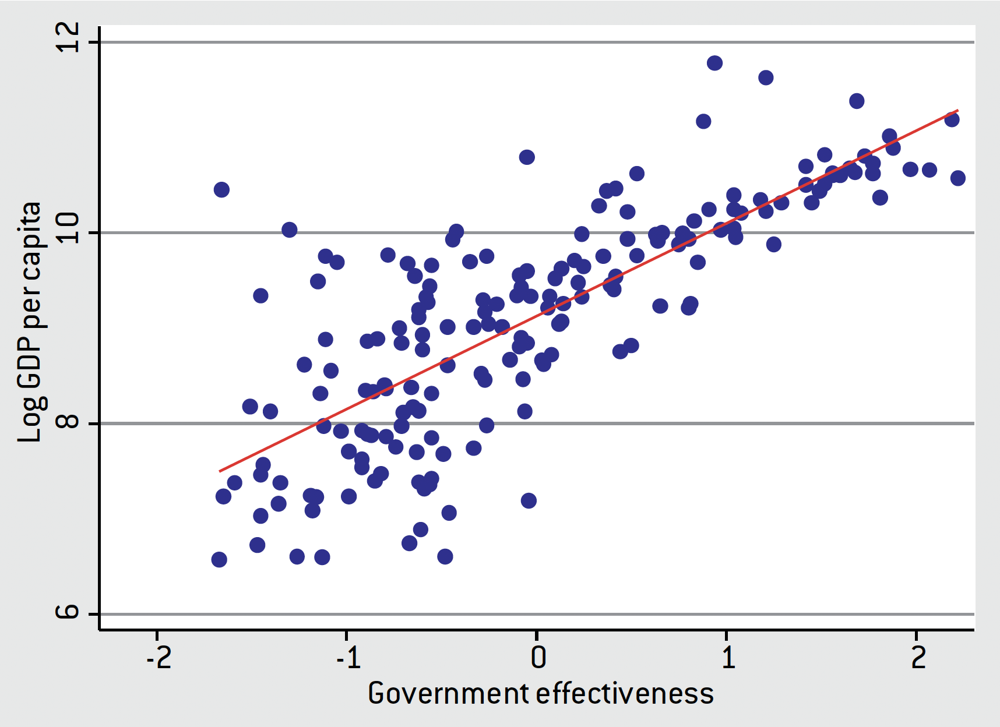

政治經濟學與經濟發展導論
政治經濟學與經濟發展入門。
根據世界銀行在 2022 年的統計，美國的人均 GDP(GDP per capita)為 76399 美元，離美國最近的墨西哥為 11091 美元，肯亞為 2099 美元，而尼日則為 533 美元。我們可以很清楚的看到在 21 世紀的今天，國家之間還是存在如此巨大的貧富差距，甚至在 200、300 年前，這個差距遠比我們想像的還要來得更大。
事實上這個差距並非定值，而是逐漸擴大的趨勢。Ben Olken 提出了一些假設，指出這些國家因為以下因素而存在貧富差距。
地理因素：溫度、氣候、疾病
人力資本：教育程度
物理資本：機器設備、工廠
制度：民主/獨裁、自由/保守
事實上這些因素確實與國家之間的貧富差距有關係。不過我們在政治經濟學中所要聚焦的則是制度(instituiton)本身。學者 Alessio 在研究中透過散佈圖(scatter plot)描述了政府效率(Government effectiveness)與對數人均 GDP 之間的關係：

不過這裡又要提出另一個問題，那就是：制度真的與經濟發展有關嗎？諸多國家在成為富裕國家的過程中並不一定擁有民主政體（如中國、新加坡），而有些國家則是先變得富裕，然後才轉向民主體制（如韓國）。
政治領袖、國家總統、歷史制度等因素對於一國經濟發展是否存在決定性因素？殖民統治結束 50 年後，殖民制度對於發展是否仍存在影響？這些都是政治經濟學所要探討與深究的問題。
此外，政治經濟學討論的範疇更包含國家內部的政治。舉例來說，民主國家的一項主要特色即是投票與多數決（少數國家採共識決）的政策制定。我們最常聽到的一項分析工具即是由 Duncan Black在 1948 年提出的「中位選民定理」(median voter theorem)，其概念是贏得選舉需要獲得超過 \(50\%\) 的選票。這意味著如果候選人競爭，政策應該表達中位選民的偏好。但是這個定理在現實世界中是否成立便是一個問題。
此外，決定選舉結果的因素更可能有政治人物的身份、歷史事件、政治人物本身的人格特質，更甚者，選民有可能投票給他們最多賄賂的候選人。這些因素與一些我們無法考量到的因素加總起來，才能夠形成選舉的結果，比中位選民定理的假設更加複雜。
How does the way that voting takes place in developed/developing countries influence the policies that governments actually put in place and ultimate development outcomes
Footnotes
Terzi, Alessio. (2016). Qualifying and Quantifying the Greek Structural Reform Efforts. 10.1057/978-1-137-58944-6_10.↩︎
Reuse
Citation
@online{sung2023,
author = {Sung, Anthony},
title = {政治經濟學與經濟發展導論},
date = {2023-07-23},
url = {https://yueswater.netlify.app/posts/2023-07-23-politcal-economy-intro/},
langid = {en}
}